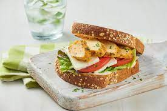
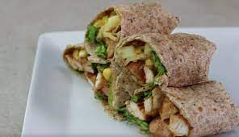
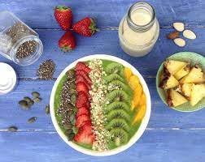
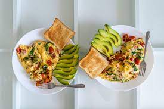

Tostadas francesas receta
- (50 g.) 2 huevos
- (240 g.) 1 taza de Leche Evaporada Ideal®
- (30 g.) 2 cucharadas de azúcar morena
- (5 ml.) 2 cucharaditas de esencia de vainilla
- (5 g.) 1 cucharada de Canela en Polvo De La Huerta MAGGI®
- (210 g.) 6 rebanadas de pan de huevo (tipo moña)
- (30 g.) 2 cucharadas de mantequilla
|

Sándwich de Pollo a las Finas Hierbas
- 1 Pechuga de pollo cortada en 4 piezas a lo largo, sin hueso y sin piel (150 g c/u)
- 1 sobre de Jugoso Al Sartén Maggi® Finas Hierbas
- 2 Cucharadas de Mayonesa
- 8 Rebanadas de Pan integral
- 8 Rebanadas de Pan integral
- 2 tomates rebanados
- Hojas de lechuga desinfectada
|
Pachineta
- 2 láminas de hojaldre redondas
- 1 huevo para pintar el hojaldre
- 100 g. almendra laminada
- 3 cucharadas de azúcar glass o en polvo
- Para el relleno de crema pastelera: 750 ml. de leche entera
- 80 g. de almidón o fécula de maíz tipo Maicena
- 3 huevos camperos
|

Burrito Ranchero
- 4 pechugas de pollo en corte milanesa (100 g c/u)
- 1 sobre de JUGOSO AL SARTÉN® MAGGI® Pimentón
- 1/2 taza de frijoles refritos
- 4 Tortillas de harina de trigo
- 1 Pieza de chorizo picado y frito
- 1 Aguacate cortado en rebanadas
|

Smoothie Bowl Verde
- 1/2 taza de Bebida de Avena Linaza Nature´s Heart®
- 1 banano maduro congelado
- ½ taza de mango maduro congelado
- 1 cucharada de coco fresco
- 5 hojas de espinaca congelada
- Toppings al gusto
|
Cupcakes de chocolate con cheerios de miel
- 2 Tazas de Cheerios Miel
- 1/2 Taza de Nesquik en polvo
- 2 huevos
- media taza (té) de azúcar
- 4 cucharadas de aceite
- 1 taza (té) de harina de trigo
- 1 cucharada de levadura en polvo
|

Omelette de Vegetales Mixtos
- (52.5 g.) 1 sobre de Huevo MÁS MAGGI®
- 2 huevos XL
- 180g.) 1 taza de vegetales Mixtos (cebolla, tomate, chile pimiento verde)
- 80 ml. aceite suave de oliva o girasol
- (120g.) ½ tz de queso mozzarella
- (120 ml.) ½ taza de agua
|
Huevos revueltos con vegetales
- (52.5 g.) 1 sobre de Huevo MÁS MAGGI®
- (120 ml.) ½ taza de agua
- (150g.) 3 huevos medianos
-
- 1 tomate grande en cubos
- ½ cebolla cortada finamente
- 6 hojas de espinaca limpias cortadas en tiras
- (45g.) 3 cucharadas de mantequilla
|